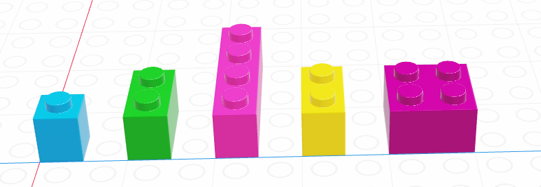
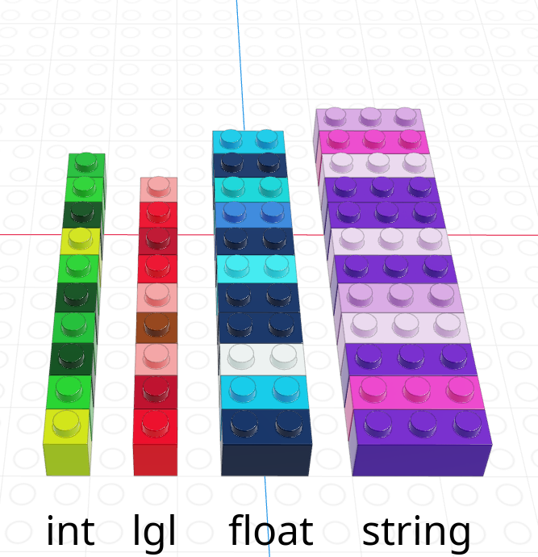
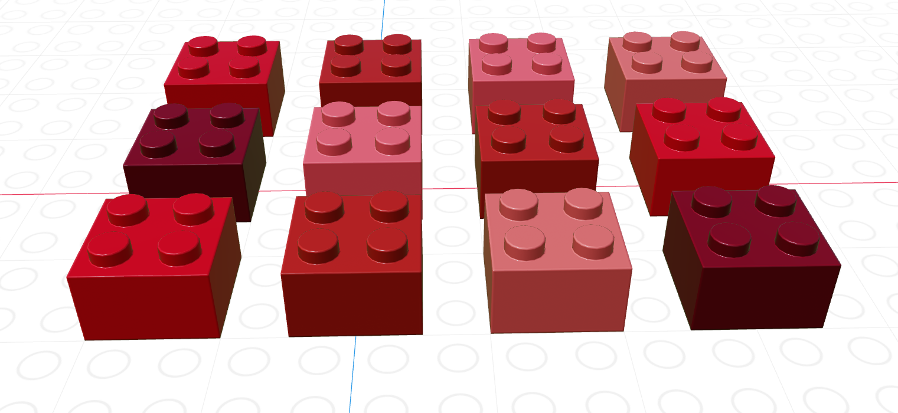

type(False)
type(2) # by default, python treats whole numbers as integers
type(2.0) # to force it not to be an integer, add a .0
type("Hello, programmer!")strIn this chapter, we will review some basics of general computer programming, and how they appear in python.
It is important to have a base grasp on the types of data you might see in data analyses.
Let’s start this section with some basic vocabulary.
1, 2, "Hello, World", and so on.2 is an integer, "Hello, World" is a string (it contains a “string” of letters). Strings are in quotation marks to let us know that they are not variable names.In python, there are some very basic data types:
logical or boolean - False/True or 0/1 values. Sometimes, boolean is shortened to bool
integer - whole numbers (positive or negative)
double or float - decimal numbers.
numeric - python uses the name numeric to indicate a decimal value, regardless of precision.
character or string or object - holds text, usually enclosed in quotes.
If you don’t know what type a value is, python has a function to help you with that.
type(False)
type(2) # by default, python treats whole numbers as integers
type(2.0) # to force it not to be an integer, add a .0
type("Hello, programmer!")strIn python, boolean values are True and False. Capitalization matters a LOT.
Other details: if we try to write a million, we would write it 1000000 instead of 1,000,000. Commas are used for separating numbers, not for proper spacing and punctuation of numbers. This is a hard thing to get used to but very important – especially when we start reading in data.
Programming languages use variables - names that refer to values. Think of a variable as a container that holds something - instead of referring to the value, you can refer to the container and you will get whatever is stored inside.
In python, we assign variables values using the syntax object_name = value You can read this as “object name gets value” in your head.
message = "So long and thanks for all the fish"
year = 2025
the_answer = 42
earth_demolished = FalseWe can then use the variables - do numerical computations, evaluate whether a proposition is true or false, and even manipulate the content of strings, all by referencing the variable by name.
message + ", sang the dolphins."
year + the_answer
not earth_demolishedTrueThere are only two hard things in Computer Science: cache invalidation and naming things.
– Phil Karlton
Object names must start with a letter and can only contain letters, numbers, and _.
What happens if we try to create a variable name that isn’t valid?
Starting a variable name with a number will get you an error message that lets you know that something isn’t right.
1st_thing = "No starting with numbers"
first~thing = "No other symbols"
first.thing = "Periods have a particular meaning!"SyntaxError: invalid syntax (3761243318.py, line 1)Naming things is difficult! When you name variables, try to make the names descriptive - what does the variable hold? What are you going to do with it? The more (concise) information you can pack into your variable names, the more readable your code will be.
There are a few different conventions for naming things that may be useful:
some_people_use_snake_case, where words are separated by underscoressomePeopleUseCamelCase, where words are appended but anything after the first word is capitalized (leading to words with humps like a camel).variables_thatLookLike_this and they are almost universally hated.As long as you pick ONE naming convention and don’t mix-and-match, you’ll be fine. It will be easier to remember what you named your variables (or at least guess) and you’ll have fewer moments where you have to go scrolling through your script file looking for a variable you named.
We talked about values and types above, but skipped over a few details because we didn’t know enough about variables. It’s now time to come back to those details.
What happens when we have an integer and a numeric type and we add them together? Hopefully, you don’t have to think too hard about what the result of 2 + 3.5 is, but this is a bit more complicated for a computer for two reasons: storage, and arithmetic.
In days of yore, programmers had to deal with memory allocation - when declaring a variable, the programmer had to explicitly define what type the variable was. This tended to look something like the code chunk below:
int a = 1
double b = 3.14159Typically, an integer would take up 32 bits of memory, and a double would take up 64 bits, so doubles used 2x the memory that integers did. R is dynamically typed, which means you don’t have to deal with any of the trouble of declaring what your variables will hold - the computer automatically figures out how much memory to use when you run the code. So we can avoid the discussion of memory allocation and types because we’re using higher-level languages that handle that stuff for us2.
But the discussion of types isn’t something we can completely avoid, because we still have to figure out what to do when we do operations on things of two different types - even if memory isn’t a concern, we still have to figure out the arithmetic question.
So let’s see what happens with a couple of examples, just to get a feel for type conversion (aka type casting or type coercion), which is the process of changing an expression from one data type to another.
type(2 + 3.14159) # add integer 2 and pi
type(2 + True) # add integer 2 and TRUE
type(True + False) # add TRUE and FALSEintAll of the examples above are ‘numeric’ - basically, a catch-all class for things that are in some way, shape, or form numbers. Integers and decimal numbers are both numeric, but so are logicals (because they can be represented as 0 or 1).
You may be asking yourself at this point why this matters, and that’s a decent question. We will eventually be reading in data from spreadsheets and other similar tabular data, and types become very important at that point, because we’ll have to know how python handles type conversions.
Above, we looked at automatic type conversions, but in many cases, we also may want to convert variables manually, specifying exactly what type we’d like them to be. A common application for this in data analysis is when there are “NA” or ” ” or other indicators in an otherwise numeric column of a spreadsheet that indicate missing data: when this data is read in, the whole column is usually read in as character data. So we need to know how to tell python that we want our string to be treated as a number, or vice-versa.
In python, we can explicitly convert a variable’s type using functions (int, float, str, etc.).
x = 3
y = "3.14159"
x + y
x + float(y)TypeError: unsupported operand type(s) for +: 'int' and 'str'In addition to variables, functions are extremely important in programming.
Let’s first start with a special class of functions called operators. You’re probably familiar with operators as in arithmetic expressions: +, -, /, *, and so on.
Here are a few of the most important ones:
| Operation | python symbol |
|---|---|
| Addition | + |
| Subtraction | - |
| Multiplication | * |
| Division | / |
| Integer Division | // |
| Modular Division | % |
| Exponentiation | ** |
Note that integer division is the whole number answer to A/B, and modular division is the fractional remainder when A/B.
So 14 // 3 would be 4, and 14 % 3 would be 2.
14 // 3
14 % 32Note that these operands are all intended for scalar operations (operations on a single number) - vectorized versions, such as matrix multiplication, are somewhat more complicated.
python operates under the same mathematical rules of precedence that you learned in school. You may have learned the acronym PEMDAS, which stands for Parentheses, Exponents, Multiplication/Division, and Addition/Subtraction. That is, when examining a set of mathematical operations, we evaluate parentheses first, then exponents, and then we do multiplication/division, and finally, we add and subtract.
(1+1)**(5-2) # 2 ^ 3 = 8
1 + 2**3 * 4 # 1 + (8 * 4)
3*1**3 # 3 * 13The + operator also works on strings. Just remember that python doesn’t speak English - it neither knows nor cares if your strings are words, sentences, etc. So if you want to create good punctuation or spacing, that needs to be done in the code.
greeting = "howdy"
person = "pardner"
greeting + person
greeting + ", " + person'howdy, pardner'Functions are sets of instructions that take arguments and return values. Strictly speaking, operators (like those above) are a special type of functions – but we aren’t going to get into that now.
We’re also not going to talk about how to create our own functions just yet. We only need to know how to use functions. Let’s look at the official documentation for the function round()`.
round(number, ndigits=None)
Return number rounded to ndigits precision after the decimal point. If ndigits is omitted or is None, it returns the nearest integer to its input.This tells us that the function requires one argument, number, a number to round. You also have the option to include a second argument, ndigits, if you want to round to something other than a whole number.
When you call a function, you can either use the names of the arguments, or simply provide the information in the expected order.
By convention, we usually use names for optional arguments but not required ones.
round(number = 2.718)
round(2.718, 2)
round(2.718)
round(2.718, ndigits = 2)2.72The names of functions and their arguments are chosen by the developer who created them. You should never simply assume what a function or argument will do based on the name; always check documentation or try small test examples if you aren’t sure.
In the previous section, we discussed 4 different data types: strings/characters, numeric/double/floats, integers, and logical/booleans. As you might imagine, things are about to get more complicated.
Data structures are more complicated arrangements of information.
| Homogeneous | Heterogeneous | |
|---|---|---|
| 1D | vector | list |
| 2D | matrix | data frame |
| N-D | array |
Methods or attributes are a special type of function that operate only on a specific data structure When using a method in python, you can use a period . to apply the function to an object.
my_nums = [1,2,3,4,5]
my_nums.sort()Careful, though! If a function is not specifically designed to be an attribute of the structure, this . trick won’t work.
my_nums.round()AttributeError: 'list' object has no attribute 'round'A list is a one-dimensional column of heterogeneous data - the things stored in a list can be of different types.

x = ["a", 3, True]
x['a', 3, True]The most important thing to know about lists, for the moment, is how to pull things out of the list. We call that process indexing.
Every element in a list has an index (a location, indicated by an integer position)3.
In python, we count from 0.
x = ["a", 3, True]
x[0] # This returns a list
x[0:2] # This returns multiple elements in the list
x.pop(0)'a'List indexing with [] will return a list with the specified elements.
To actually retrieve the item in the list, use the .pop attribute. The only downside to .pop is that you can only access one thing at a time.
We’ll talk more about indexing as it relates to vectors, but indexing is a general concept that applies to just about any multi-value object.
A vector is a one-dimensional column of homogeneous data. Homogeneous means that every element in a vector has the same data type.
We can have vectors of any data type and length we want: 
Base python does not actually have a vector-type object! However, in data analysis we often have reasons to want a single-type data structure, so we will load an extra function called array from the numpy library to help us out. (More on libraries later!)
from numpy import array
digits_pi = array([3, 1, 4, 1, 5, 9, 2, 6, 5, 3, 5])
# Access individual entries
digits_pi[1]
# Print out the vector
digits_piarray([3, 1, 4, 1, 5, 9, 2, 6, 5, 3, 5])We can pull out items in a vector by indexing, but we can also replace specific elements as well:
favorite_cats = array(["Grumpy", "Garfield", "Jorts", "Jean"])
favorite_cats
favorite_cats[2] = "Nyan Cat"
favorite_catsarray(['Grumpy', 'Garfield', 'Nyan Cat', 'Jean'], dtype='<U8')If you’re curious about any of these cats, see the footnotes4.
As you might imagine, we can create vectors of all sorts of different data types. One particularly useful trick is to create a logical vector that tells us which elements of a corresponding vector we want to keep.
If we let the black lego represent “True” and the grey lego represent “False”, we can use the logical vector to pull out all values in the main vector.
| Black = True, Grey = False | Grey = True, Black = False |
|---|---|
Note that for boolean masking to work properly, the logical index must be the same length as the vector we’re indexing. This constraint will return when we talk about data frames, but for now just keep in mind that logical indexing doesn’t make sense when this constraint isn’t true.
As vectors are a collection of things of a single type, what happens if we try to make a vector with differently-typed things?
As a reminder, this is an example of implicit type conversion - python decides what type to use for you, going with the type that doesn’t lose data but takes up as little space as possible.
Implicit type conversions may seem convenient, but they are dangerous! Imagine that you created one of the arrays above, expecting it to be numeric, and only found out later that python had made it into strings.
A matrix is the next step after a vector - it’s a set of values arranged in a two-dimensional, rectangular format.

Once again, we need to use the numpy package to allow the matrix type to exist in python.
from numpy import matrix
matrix([[1,2,3], [4,5,6]])matrix([[1, 2, 3],
[4, 5, 6]])Notice how we give the matrix() function an argument that is a “list of lists”. That is, the first item in the list is [1,2,3] which is itself a list.
You can always think of lists as the most “neutral” data structure - if you don’t know what you want to use, it’s reasonably to start with the list, and then adjust from there, as we have with the array() and matrix() functions from numpy.
python uses [row, column] to index matrices. To extract the bottom-left element of a 3x4 matrix, we would use [2,0] to get to the third row and first column entry (remember that Python is 0-indexed).
As with vectors, you can replace elements in a matrix using assignment.
We will not use matrices often in this class, but there are many math operations that are very specific to matrices. If you continue on in your data science journey, you will probably eventually need to do matrix algebra in python.
One of the great things about python is that it is an open-source language. This means that it was and is developed by individuals in a community rather than a private company, and the core code of it is visible to everyone.
The major consequences are:
It is free for anyone to use, rather than behind a paywall. (SAS or Java are examples of languages produced by private companies that require paid licenses to use.)
The language grows quickly, and in many diverse ways, because anyone at all can write their own programs. (You will write functions in a couple weeks!)
You are not allowed to sell your code for profit. (You can still write private code to help your company with a task - but you may not charge money to others for the programs themselves.)
We believe very strongly in the philosophy of open-source. However, it does have its downsides: mainly, that nearly all progress in the language is on a volunteer, community basis.
As a user of open source tools, we hope you will give back in whatever ways you can - sharing your work publicly, helping others learn, and encouraging private companies to fund open-source work.

When an open-source developer creates a new collection of functions and capabilities for python, and they want it to be easily usable and accessible to others, they bundle their code into a library. (You will sometimes here this called a package.)
Packages that meet certain standards of quality and formatting are added to the Python Package Index, after which they can be esailly installed with pip (“package installer for python”).
Most of the packages we will use in this class actually come pre-installed with Anaconda, so we won’t have to worry about this too much.
Python is notoriously frustrating for managine package installs. We will keep things simple in this class, but if you reach a point where you are struggling with libraries, know that you are not alone.

When you want to use functions from a library in your current code project, you have two options:
It is possible to load the full functionality of a library into your notebook project by adding an import statement in your very first code chunk.
The downside of this is that you then need to reference all those functions using the package name:
import numpy
my_nums = numpy.array([1,2,3,4,5])
numpy.sum(my_nums)15Because this can get tedious, it’s common practice to give the package a “nickname” that is shorter:
import numpy as np
my_nums = np.array([1,2,3,4,5])
np.sum(my_nums)15If you only need a handful of functions from the library, and you want to avoid the extra typing of including the package name/nickname, you can pull those functions in directly:
from numpy import array, sum
my_nums = array([1,2,3,4,5])
sum(my_nums)15Since we are interested in using python specifically for data analysis, we will mention one more important Data Structure: a data frame.
Unlike lists (which can contain anything at all) or matrices (which must store all the same type of data), data frames are restricted by column. That is, every data entry within a single column must be the same type; but two columns in the same data frame can have two different types.
One way to think of a data frame is as a list of vectors that all have the same length.
As with vectors and matrices, we need help from an external package to construct and work efficiently with data frames. This library is called pandas, and you will learn many of its functions next week.
For now, let’s just look at a pandas data frame:
import pandas as pd
dat = pd.read_csv("https://gist.githubusercontent.com/slopp/ce3b90b9168f2f921784de84fa445651/raw/4ecf3041f0ed4913e7c230758733948bc561f434/penguins.csv")
dat
dat.info()<class 'pandas.core.frame.DataFrame'>
RangeIndex: 344 entries, 0 to 343
Data columns (total 9 columns):
# Column Non-Null Count Dtype
--- ------ -------------- -----
0 rowid 344 non-null int64
1 species 344 non-null object
2 island 344 non-null object
3 bill_length_mm 342 non-null float64
4 bill_depth_mm 342 non-null float64
5 flipper_length_mm 342 non-null float64
6 body_mass_g 342 non-null float64
7 sex 333 non-null object
8 year 344 non-null int64
dtypes: float64(4), int64(2), object(3)
memory usage: 24.3+ KBNotice how the columns all have specific types: integers, floats, or strings (“object”). They also each have names. We can access the vector of information in one column like so…
dat.body_mass_g0 3750.0
1 3800.0
2 3250.0
3 NaN
4 3450.0
...
339 4000.0
340 3400.0
341 3775.0
342 4100.0
343 3775.0
Name: body_mass_g, Length: 344, dtype: float64… which then lets us do things to that column vector just as we might for standalone vectors:
## using methods
dat.body_mass_g.mean()
## editing elements
dat.body_mass_g[0] = 10000000
dat.body_mass_g
## boolean masking
big_penguins = dat.body_mass_g > 6000
dat.loc[big_penguins]| rowid | species | island | bill_length_mm | bill_depth_mm | flipper_length_mm | body_mass_g | sex | year | |
|---|---|---|---|---|---|---|---|---|---|
| 0 | 1 | Adelie | Torgersen | 39.1 | 18.7 | 181.0 | 10000000.0 | male | 2007 |
| 169 | 170 | Gentoo | Biscoe | 49.2 | 15.2 | 221.0 | 6300.0 | male | 2007 |
| 185 | 186 | Gentoo | Biscoe | 59.6 | 17.0 | 230.0 | 6050.0 | male | 2007 |
Whew! How’s that for an overview?

The most important takeaways from this chapter are:
Objects in python have types, and sometimes functions and operators behave differently based on the type.
Functions have both optional and required arguments. They take input and produce output.
Data can be stored in multiple different structures. The choice of structure depends on the dimensionality (1D or 2D) and the homogeneity (do all elements need to be the same type?)
We use indexing to access (and edit) individual elements or sections of data structures.
We use boolean masking to find only the elements of a vector, matrix, or data frame that meet a particular qualification.
python is an open-source language. We will import many different libraries to add to our basic functionality.
This means that doubles take up more memory but can store more decimal places. You don’t need to worry about this in anything we will do.↩︎
In some ways, this is like the difference between an automatic and a manual transmission - you have fewer things to worry about, but you also don’t know what’s going on under the hood nearly as well↩︎
Throughout this section (and other sections), lego pictures are rendered using https://www.mecabricks.com/en/workshop. It’s a pretty nice tool for building stuff online!↩︎
Grumpy cat, Garfield, Nyan cat. Jorts and Jean: The initial post and the update (both are worth a read because the story is hilarious). The cats also have a Twitter account where they promote workers rights.↩︎